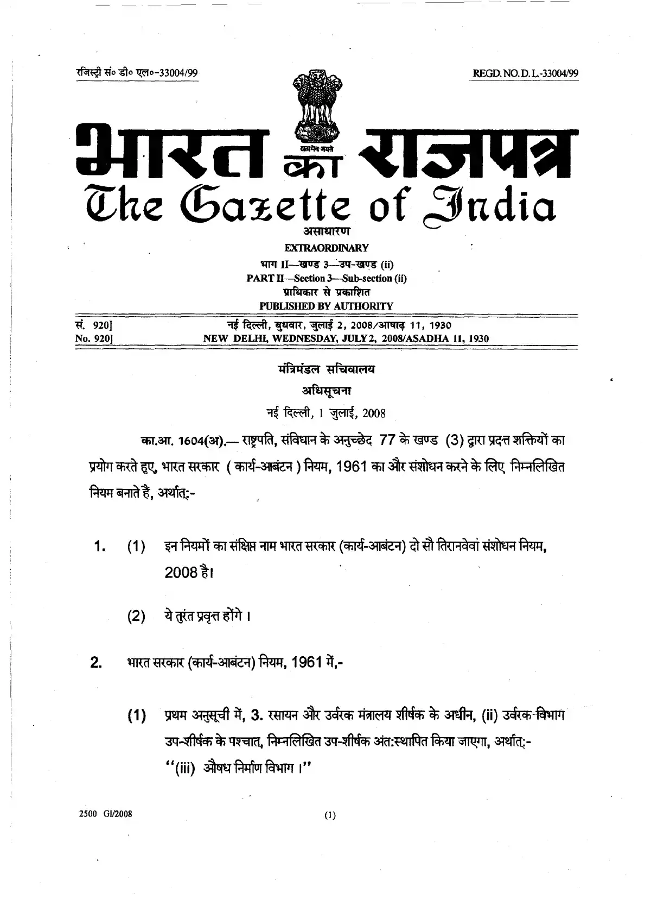
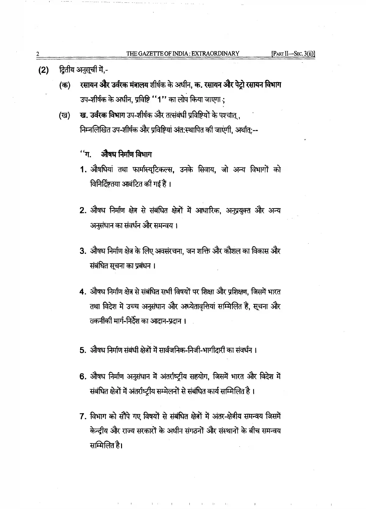
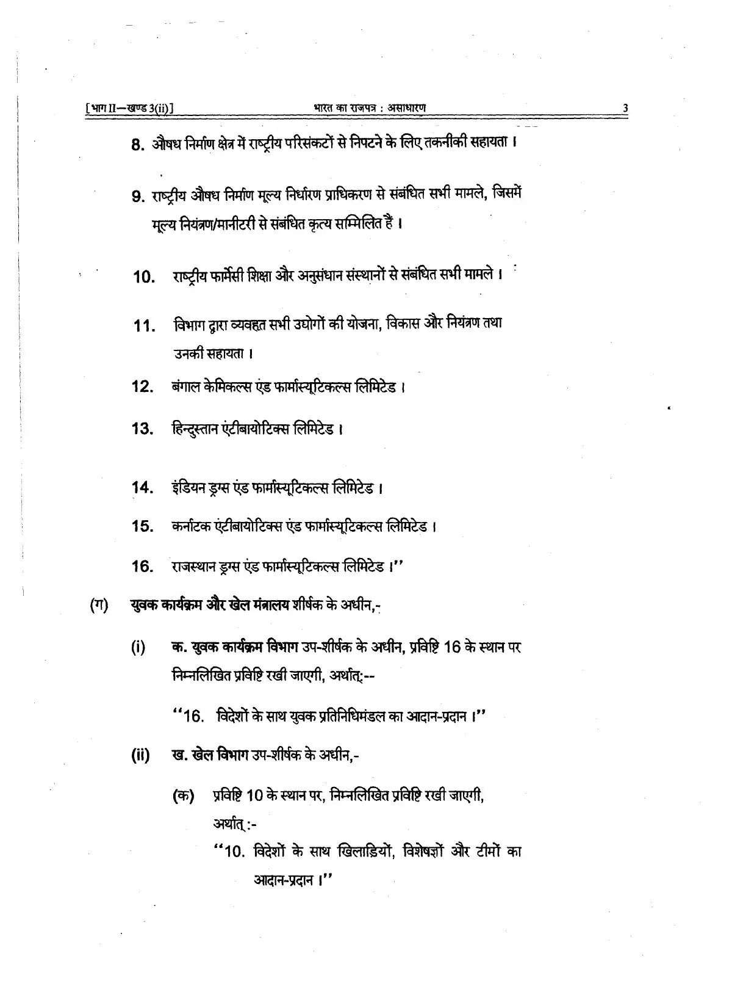
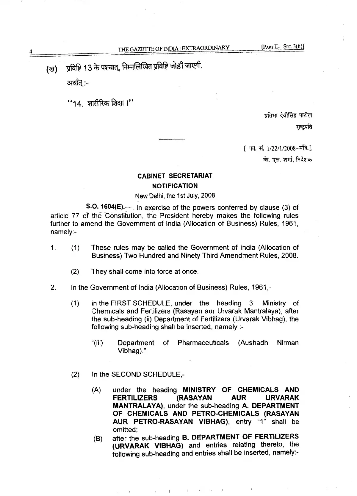
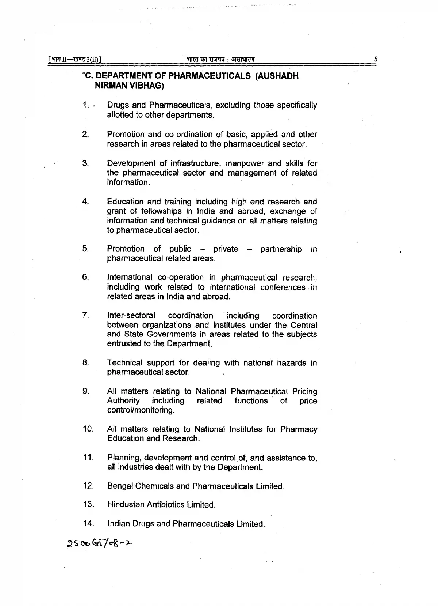
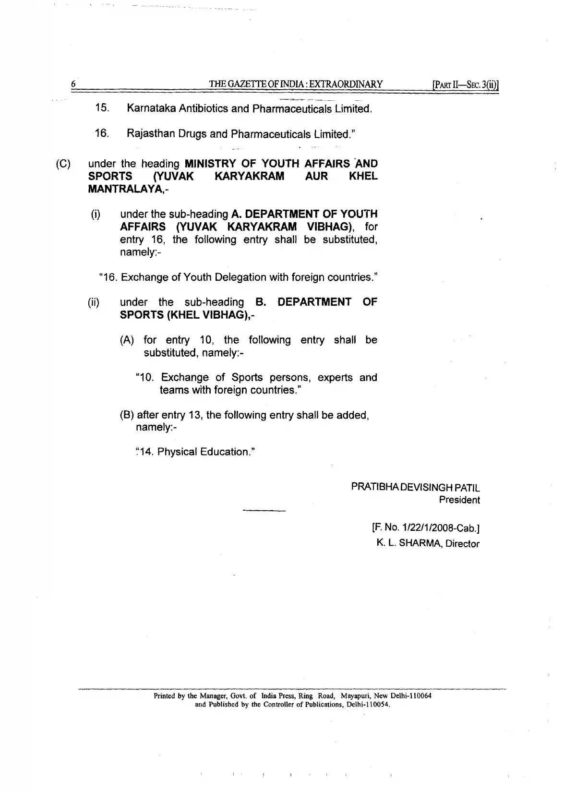

Amendment #293 (S.O. 1604(E), 2008)
6 changes: 1 to the First Schedule, 5 to the Second Schedule. 6 applied
What it did to the ministries
- grewMinistry of Chemicals and Fertilizers grows from 18 to 33 subjects change 1, 2, 3 · histories: Chemicals & Fertilizers
The order, page by page
Page 1 of 6

Page 2 of 6

Page 3 of 6

Page 4 of 6

123after Schedule 1 › Ministry of Chemicals and Fertilizers › Department of Fertilizers
- iii. Department of Pharmaceuticals
applied at schedule 1 › ministry 3 › department iii in the Rules after #293
Schedule 2 › MINISTRY OF CHEMICALS AND FERTILIZERS › DEPARTMENT OF CHEMICALS AND PETRO-CHEMICALS › entry 1
applied at schedule 2 › ministry MINISTRY OF CHEMICALS AND FERTILIZERS › department A › entry 1 in the Rules after #293
after Schedule 2 › MINISTRY OF CHEMICALS AND FERTILIZERS › DEPARTMENT OF FERTILIZERS
- C. DEPARTMENT OF PHARMACEUTICALS
- 1. . Drugs and Pharmaceuticals, excluding those specifically allotted to other departments.
- 2. Promotion and co-ordination of basic, applied and other research in areas related to the pharmaceutical sector.
- 3. Development of infrastructure, manpower and skills for the pharmaceutical sector and management of related information.
- 4. Education and training including high end research and grant of fellowships in India and abroad, exchange of information and technical guidance on all matters relating to pharmaceutical sector.
- 5. Promotion of public - private - partnership in pharmaceutical related areas.
and 11 more
- 6. International co-operation in pharmaceutical research including work related to international conferences in related areas in India and abroad.
- 7. Inter-sectoral coordination including coordination between organizations and institutes under the Central and State Governments in areas related to the subjects entrusted to the Department.
- 8. Technical support for dealing with national hazards in pharmaceutical sector.
- 9. All matters relating to National Pharmaceutical Pricing Authority including related functions of price control/monitoring.
- 10. All matters relating to National Institutes for Pharmacy Education and Research.
- 11. Planning, development and control of, and assistance to all industries dealt with by the Department.
- 12. Bengal Chemicals and Pharmaceuticals Limited.
- 13. Hindustan Antibiotics Limited.
- 14. Indian Drugs and Pharmaceuticals Limited. 250065/08-2 i 6
- 15. Karnataka Antibiotics and Pharmaceuticals Limited.
- 16. Rajasthan Drugs and Pharmaceuticals Limited.
applied at schedule 2 › ministry MINISTRY OF CHEMICALS AND FERTILIZERS › department C in the Rules after #293
read page break
Page 5 of 6

Page 6 of 6

456Schedule 2 › MINISTRY OF YOUTH AFFAIRS AND SPORTS › DEPARTMENT OF YOUTH AFFAIRS › entry 16
- 16. Exchange of Youth Delegation with foreign countries.
applied at schedule 2 › ministry MINISTRY OF YOUTH AFFAIRS AND SPORTS › department A › entry 16 in the Rules after #293
Schedule 2 › MINISTRY OF YOUTH AFFAIRS AND SPORTS › DEPARTMENT OF SPORTS › entry 10
- 10. Exchange of Sports persons, experts and teams with foreign countries.
applied at schedule 2 › ministry MINISTRY OF YOUTH AFFAIRS AND SPORTS › department B › entry 10 in the Rules after #293
after Schedule 2 › MINISTRY OF YOUTH AFFAIRS AND SPORTS › DEPARTMENT OF SPORTS › entry 13
- 14. Physical Education.
applied at schedule 2 › ministry MINISTRY OF YOUTH AFFAIRS AND SPORTS › department B › entry 14 in the Rules after #293
How this document was read
From the Government of India (Allocation of Business) Rules, 1961 and their amendments, as published by the Cabinet Secretariat (cabsec.gov.in), read by orgpedia. The readings of the older scanned gazettes have known gaps.